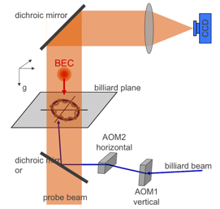
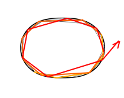

Quantum Chaos
with a BEC
ÜChaotic
trajectory of a particle vs. quasi-eigenmodes of a matter wave
ÜMatter
wave (BEC) enclosed in a potential well by light force
ÜEfficient
cavity for an atom laser


chaotic trajectory